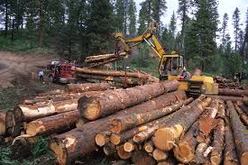
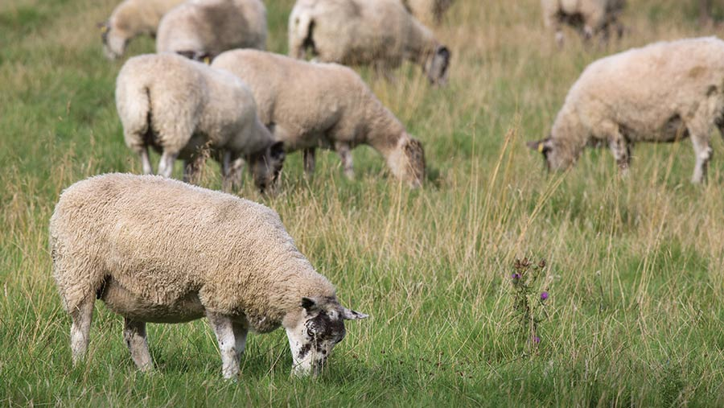
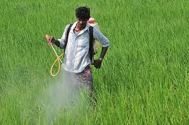
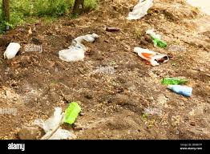

What harms the soil?

Deforestation
Trees removed → soil erodes.
More info: Without tree roots to hold it, soil easily washes away in rain and wind.

Overgrazing
Too many animals → no grass cover.
More info: When animals eat grass faster than it regrows, soil becomes bare and erodes.

Excess chemicals
Kills soil life, makes it salty.
More info: Overuse of pesticides and fertilizers damages soil microbes and fertility.

Pollution & waste
Dirty water/garbage harms fields.
More info: Industrial waste, sewage, and plastics make the soil toxic for plants and people.